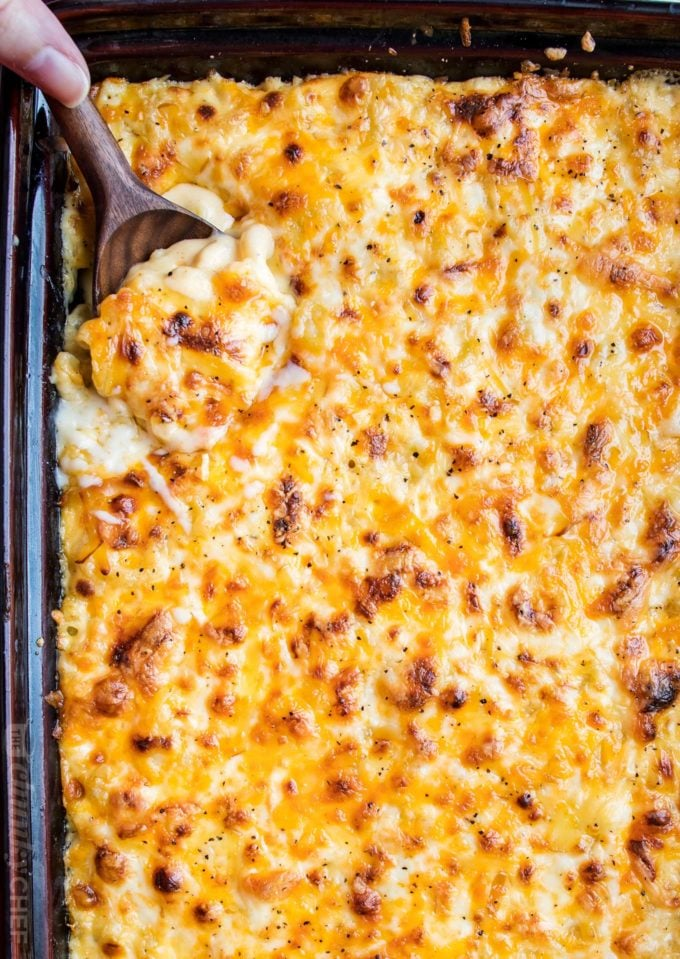

Mac N Cheese

Description
Baked mac and cheese. It’s nearly the universal comfort food, and there are SO many variations!
In fact, I almost didn’t post this recipe, as there are SOOOO many mac and cheese recipes available,
and most people already have their favorite way of making it.
Ingredients
- 1 lb. dried elbow pasta
- 1/2 cup unsalted butter
- 1/2 cup all purpose flour
- 1 1/2 cups whole milk
- 2 1/2 cups half and half
- 4 cups shredded medium sharp cheddar cheese
- 2 cups shredded gruyere cheese
- 1/2 tbsp. salt
- 1/2 tsp black pepper
- 1/4 tsp paprika
Instructions
- preheat oven to 325
- boil water then add pasta after boiled
- shred cheeses and together to mix
- melt butter sprinkle in flopur then add milk and half and half
- heat over med heat, whisk often until thickened to very thick
- remove from heat and stir in spices and 1 1/2 cups of cheeses
- in large bowl combine drained pasta and cheese sauce
- sprinkle last bits of cheese over the top then bake for 15 mins until cheese is bubbly and gooey